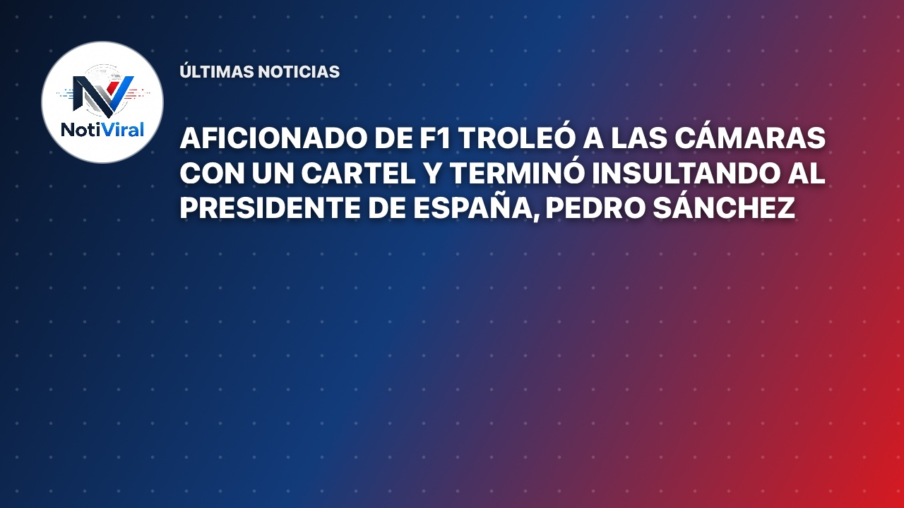

Un particular episodio ocurrido durante el Gran Premio de España de Fórmula 1, celebrado en la ciudad de Madrid, se volvió viral rápidamente en las plataformas digitales después de que un aficionado ideara una insólita estrategia para conseguir que las cámaras de televisión enfocaran su pancarta. Lo que prometía ser una simple muestra de fervor deportivo hacia un piloto de la máxima categoría del automovilismo internacional terminó transformándose en un inesperado mensaje de carácter político con alto impacto en la opinión pública.
De acuerdo con los datos conocidos sobre el hecho, el hombre asistió al evento automovilístico portando un cartel con un mensaje redactado en inglés, diseñado específicamente para capturar la atención de los realizadores de la transmisión oficial. En dicha inscripción aparente, el asistente aseguraba haber viajado miles de kilómetros exclusivamente para ver competir al piloto neozelandés Liam Lawson, una narrativa emotiva y atractiva para las cámaras que suelen buscar historias pintorescas entre los espectadores en las gradas.
La estrategia del aficionado consistió en mantener la fachada de apoyo incondicional al deportista mientras las cámaras del circuito televisivo se acercaban para enfocarlo. Sin embargo, en el preciso instante en que logró captar la atención de la señal internacional y asegurarse de estar saliendo en directo para millones de hogares, el individuo dio vuelta la pancarta de manera repentina.
Al girar el cartón, dejó al descubierto un mensaje ofensivo y directo dirigido al presidente del Gobierno de España, Pedro Sánchez. Esta maniobra calculada permitió que el insulto fuera transmitido brevemente antes de que los realizadores del evento pudieran reaccionar y cambiar el enfoque hacia otra zona del circuito madrileño.
Evento: Gran Premio de España de Fórmula 1.
Ubicación: Madrid, España.
Protagonista: Un aficionado anónimo que utilizó una doble pancarta.
Afectados indirectos: El piloto Liam Lawson y la organización de la transmisión televisiva.
Como era de esperar en la era digital, la secuencia no tardó en circular masivamente a través de las redes sociales, especialmente en plataformas como X (antes Twitter), donde los usuarios compartieron los fragmentos del video destacando la astucia y la osadía de la maniobra utilizada por el asistente para burlar los filtros de seguridad y los protocolos de las transmisiones deportivas.
El inusual momento trascendió las fronteras de la propia competición y llegó hasta el conocimiento del piloto neozelandés Liam Lawson. El deportista reaccionó posteriormente a través de sus canales en redes sociales al enterarse de que su nombre y su supuesta base de admiradores habían sido instrumentalizados como parte de la llamativa protesta política dirigida contra el mandatario español.
Hasta el momento, las autoridades del evento no han emitido sanciones oficiales conocidas ni se ha logrado identificar formalmente al autor de la maniobra, cuya verdadera motivación política permanece en el terreno de la especulación, mientras el video continúa acumulando reproducciones y debate en el entorno digital internacional.